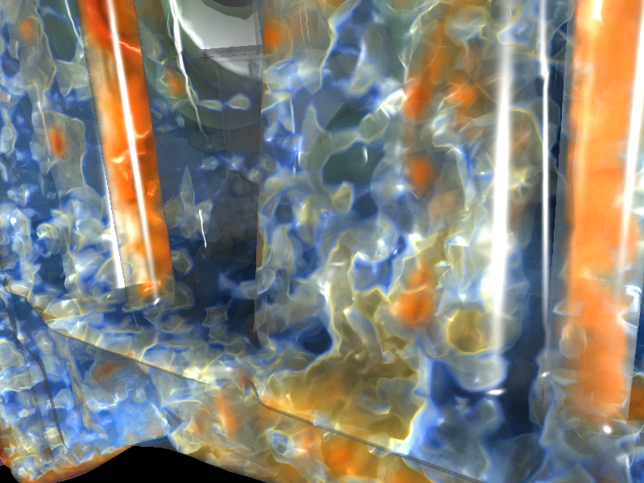

L0 resolutions
32^3, 128^3, 384^3, ground truth
Tables and plots
Performance measurements for the datasets of this paper. The light volume calculation times are measured using a single directional light source. L0 grid is a regular grid of 128\times 128\times 128 voxels, and L1 grid is the original tetrahedral grid.
| Dataset | #Vertices | #Tetrahera | L0 Propagation | L0 Scattering | L1 Propagation | L1 Scattering | Total |
|---|---|---|---|---|---|---|---|
| Aircraft1 | 103 K | 567 K | 73 ms | 12 ms | 6 ms | 20 ms | 111 ms |
| Aircraft2 | 165 K | 935 K | 58 ms | 11 ms | 6 ms | 24 ms | 99 ms |
| Aircraft3 | 804 K | 4.6 M | 53 ms | 10 ms | 25 ms | 136 ms | 224 ms |
| Flame | 538 K | 3.2 M | 57 ms | 10 ms | 15 ms | 88 ms | 170 ms |
| Engine | 1.2 M | 6.0 M | 64 ms | 11 ms | 28 ms | 152 ms | 255 ms |
| Train | 1.0 M | 6.1 M | 60 ms | 11 ms | 19 ms | 123 ms | 213 ms |
| Car | 4.2 M | 24.7 M | 56 ms | 11 ms | 126 ms | 561 ms | 754 ms |
Performance test
L0: Cartesian regular base grid, L1: original tetrahedral grid
L0 resolution: 128x128x128, L1 propagation steps: >=16, 1 directional light source. Note that L0 scattering is not necessary for unstructured data rendering. Image size: 1024x1024.
| Dataset | #Tetra(L1) | L0 absorb | L0 scatter | L1 absorb | L1 scatter | Total(ms) | Render | RT |
|---|---|---|---|---|---|---|---|---|
| parikh(Aircraft1) | 567862 | 73 | 12 | 6 | 20 | 111 | 358 | 11579 |
| lwt(Aircraft3) | 4607888 | 53 | 10 | 25 | 136 | 224 | 491 | 18735 |
| ICE(Train) | 6177293 | 60 | 11 | 19 | 123 | 213 | 322 | 12764 |
| BMW(Car) | 24709697 | 56 | 11 | 126 | 561 | 754 | 415 | 12653 |
| engine | 6072445 | 64 | 11 | 28 | 152 | 255 | 1276 | 52153 |
| Drop(Aircraft2) | 935410 | 58 | 11 | 6 | 24 | 99 | 340 | 11874 |
| LiftedFlame | 3216447 | 57 | 10 | 15 | 88 | 170 | 294 | 18846 |
L1 propagation steps: >=16, 1 directional light source.
| Dataset | #Tetra(L1) | L0 size | L0 absorb | L0 scatter | L1 absorb | L1 scatter | Total(ms) |
|---|---|---|---|---|---|---|---|
| Vortex | 6000000 | 32^3 | 22 | 1 | 15 | 83 | 121 |
| 64^3 | 38 | 3 | 14 | 83 | 138 | ||
| 128^3 | 55 | 10 | 15 | 83 | 163 | ||
| 256^3 | 88 | 100 | 20 | 83 | 289 | ||
| 384^3 | 143 | 334 | 32 | 83 | 592 |
L0 size: 128x128x128, L1 propagation steps: >=16, 1 directional light source.
| Dataset | #Vertex | #Tetra(L1) | L0 absorb | L0 scatter | L1 absorb | L1 scatter | Total(ms) |
|---|---|---|---|---|---|---|---|
| Vortex | 85184 | 477042 | 56 | 13 | 5 | 9 | 84 |
| 175616 | 998250 | 56 | 12 | 5 | 18 | 91 | |
| 343000 | 1971054 | 57 | 11 | 6 | 29 | 103 | |
| 681472 | 3951018 | 54 | 11 | 10 | 53 | 128 | |
| 1030301 | 6000000 | 55 | 10 | 15 | 83 | 163 | |
| 1685159 | 9858192 | 53 | 11 | 23 | 142 | 229 | |
| 2352637 | 13799808 | 54 | 10 | 31 | 208 | 303 | |
| 3048625 | 17915904 | 53 | 10 | 41 | 260 | 364 | |
| 3723875 | 21913584 | 56 | 11 | 47 | 320 | 434 | |
| 4410944 | 25984482 | 56 | 10 | 54 | 380 | 500 | |
| 5088448 | 30001266 | 54 | 12 | 62 | 436 | 564 |
Related work
The volume illumination involves solving the radiative transfer equation~\cite{Chandrasekhar:1960}, which formalizes the evolution of light transport with participating media, including light absorption, scattering and emission effects. Max~\cite{Max:1995} presented an overview on the optical models used in direct volume rendering (DVR). Kajiya and von Herzen~\cite{Kajiya:1984} presented a model for rendering volume densities which included multiple scattering computation. The scattering equation is solvable analytically only in some simple configurations. Several methods have been proposed to numerically solve the radiative transfer equation by using either ray tracing~\cite{Lafortune:1996}~\cite{Levoy:1990} or radiosity~\cite{Rushmeier:1987}. These methods are capable of rendering various illumination effects with arbitrary phase functions and heterogeneous media. However, the computational cost is tremendous, and the speed is far from the requirement of interaction.
To simulate light transport in participating media, Jensen and Christensen proposed a two-pass method using volumetric photon mapping (VPM)~\cite{Jensen:1998}. In its first stage, the method traces photons throughout the volume and stores them into spatial hierarchical data structure. In the second pass, an adaptive ray marching algorithm is used and the pre-stored photons are gathered for final radiance. There are many methods aiming to improve the efficiency of VPM~\cite{Boudet:2005}~\cite{Jarosz:2008}. However, the cost of creation and maintenance of the hierarchical structure prevents early VPM methods from achieving interactive performance. More recently, J\"{o}nsson et al.~\cite{Jonsson:2012} presented an interactive method extending photon mapping. By tracking the history of photons, full recomputation of the photon map can be avoided when the transfer function is changed; instead, only the photons affected by the parameter changes are recomputed. However, full recomputation is still required when the parameter change affects all photons such as moving light source or when time-varying data is visualized. However, in the context of unstructured-grid DVR, photon mapping based methods may suffer from the adaptive nature of the unstructured grids. Large amount of photons may needed in order to fulfill the accuracy requirement in the high resolution regions of the grid.
Many interactive techniques have been proposed to enhance the volume rendering for visualization by supporting illumination effects such as shadowing and scattering. For example, obscurance and ambient occlusion (AO) methods provide relatively inexpensive ways to approximate indirect illumination. GPU-based screen space ambient occlusion (SSAO)~\cite{Shanmugam:2007} is a high-performance technique to render occlusion effects in polygonal shading by sampling the depth buffer in screen space. It can also be applied to volume rendering~\cite{Diaz:2010}. Although efficient, SSAO may not produce desired results in complex scenarios, for example, semitransparent objects, since only one depth value per pixel can be used. Object space AO, as shown in the paper of Ruiz et al.~\cite{Ruiz:2008}, provides better quality while the memory and computation cost is higher than SSAO. The evaluation of occlusion/extinction can be accelerated through the use of summed area tables (SAT)~\cite{Diaz:2010}~\cite{Schlegel:2011}, but the SAT based techniques cannot be used for unstructured grids. Recently, Schott et al.~\cite{Schott:2013} demonstrated an ambient occlusion technique for interactive volume rendering that can render mutual occlusion effects of both volume and geometric primitives, which is also supported by our method.
Although multiple scattering is important for realistic rendering of participating media, Max has stated that it is overkill to compute it in most scientific visualization applications~\cite{Max:1995}. However, it has been shown that physically plausible approximation to the global illumination effects can improve perceptual quality of the visualization~\cite{Ropinski:2010}. Kniss et al.~\cite{Kniss:2002}~\cite{Kniss:2003} proposed an interactive shading model that incorporated volumetric shadows and scattering effects, where scattering is restricted to forward scattering and estimated by applying blurring operations within a cone toward the light source. Using half-angle slicing, the lighting can be evaluated efficiently in the image space, but the light configuration is limited to a single light source. Extending the idea of Kniss et al., Ropinski et al.~\cite{Ropinski:2010} applied the lighting computation directly in volume space. In their approach, the light volume is computed first, where the light propagation is evaluated slice by slice, and then used in the shading stage of rendering. Thus, the method is applicable to any volume rendering technique, including GPU-based ray casting. However, in the context of unstructured-grid DVR, the uniform slices may not be able to provide sufficient resolution in some regions of the volume since the mesh can be highly adaptive. Following the cone-sampling idea presented by Kniss et al., Schlegel et al.~\cite{Schlegel:2011} approximated the soft shadows and scattering effects by aggregating the extinction values within the shadow cone. In their approach, the cone is approximated by a series of cuboids, and the extinction computation of the cuboids is accelerated by employing SAT. Ament et al.~\cite{Ament:2013} presented a pre-integration method for scattering in DVR, which also utilizes SAT for fast extinction values summation. The pre-integration table, independent of dataset and transfer function, is obtained by solving the full light transport with a Monte-Carlo simulation within a set of spherical regions. By employing SAT, the ambient extinction coefficient, one of the parameters of the table, can be efficiently computed, enabling interactive volume rendering. However, SAT do not work for unstructured data, and therefore the evaluation of the extinction values can be expensive in unstructured-grid DVR.
As mentioned already, the grid-based volume illumination method presented by Zhang and Ma~\cite{Zhang:2013} built the foundation of our work. We extend their method by supporting unstructured grids. Although gradient-based local Phong lighting has been used to help understand spatial structures of unstructured-grid data~\cite{Correa:2011}, to our knowledge, very few papers address on interactive global illumination for unstructured grid volume rendering.
References
- M. Ament, F. Sadlo, and D. Weiskopf. Ambient volume scattering. 2013.
- A. Boudet, P. Pitot, D. Pratmarty, and M. Paulin. Photon splatting for participating media. 2005.
- S. Chandrasekhar. Radiative Transfer. 1960.
- C. D. Correa, R. Hero, and K.-L. Ma. A comparison of gradient estimation methods for volume rendering on unstructured meshes. 2011.
- J. D{\'\i}az, P. V{\'a}zquez, I. Navazo, and F. Duguet. Real-time ambient occlusion and halos with summed area tables. 2010.
- W. Jarosz, M. Zwicker, and H. W. Jensen. The beam radiance estimate for volumetric photon mapping. 2008.
- H.W. Jensen and P. H. Christensen. Efficient simulation of light transport in scences with participating media using photon maps. 1998.
- D. Jonsson, J. Kronander, T. Ropinski, and A. Ynnerman. Historygrams: Enabling interactive global illumination in direct volume rendering using photon mapping. 2012.
- J. T. Kajiya and B. P. Von Herzen. Ray tracing volume densities. 1984.
- J. Kniss, S. Premoze, C. Hansen, and D. Ebert. Interactive translucent volume rendering and procedural modeling. 2002.
- J. Kniss, S. premoze, C. Hansen, P. Shirley, and A. McPherson. A model for volume lighting and modeling. 2003.
- E. P. Lafortune and Y. D.Willems. Rendering participating media with bidirectional path tracing. 1996.
- M. Levoy. Efficient ray tracing of volume data. 1990.
- N. Max. Optical models for direct volume rendering. 1995.
- T. Ropinski, C. D{\"o}ring, and C. Rezk-Salama. Interactive volumetric lighting simulating scattering and shadowing. 2010.
- M. Ruiz, I. Boada, I. Viola, S. Bruckner, M. Feixas, and M. Sbert. Obscurance-based volume rendering framework. 2008.
- H. E. Rushmeier and K. E. Torrance. The zonal method for calculating light intensities in the presence of a participating medium. 1987.
- P. Schlegel, M. Makhinya, and R. Pajarola. Extinction-based shading and illumination in gpu volume ray-casting. 2011.
- M. Schott, T. Martin, A. Grosset, S. Smith, and C. Hansen. Ambient occlusion effects for combined volumes and tubular geometry. 2013.
- P. Shanmugam and O. Arikan. Hardware accelerated ambient occlusion techniques on gpus. 2007.
- Y. Zhang and K.-L. Ma. Fast global illumination for interactive volume visualization. 2013.
Opcital models
Standard emission-absorption (1), gradient-based Blinn-Phong (2), our method (3), our method with gradient-based Blinn-Phong (4), our method with 2 light sources (5)

Volume rendering of the LiftedFlame dataset with different optical models. (1) The standard emission-absorption model provides very few information about the surface shape and depth cue. (2) With the Lambertian diffuse and specular reflectance, the gradient-based Blinn-Phong shading better conveys the surface shape but is still insufficient to resolve curtain ambiguities such as the local shape at the center region of the image. (3) With our advanced lighting method, one can clear see the concave shape at the center region. (4) Combined with the gradient-based surface shading, the image gains even more details about the surface shape. (5) With a red back light, the we can get the sense of material thickness while it is lost in image (2)-(4).
Comparison to ray tracing
Local lighting (left), our method (middle), ray tracing (1 shadow ray) (right). Illumination is performed with a single directional light source.


Performance numbers:
| Method | Rendering | Light Volume Construction |
|---|---|---|
| Local lighting | 328 ms | N/A |
| Our method | 328 ms | 831 ms |
| Ray tracing | 24323 ms | N/A |
Apparently RT image is sharper. Since we shoot one shadow ray for each sample point, the produced shadows are hard shadows. However, our method keeps most of shade features while the computation time is far less than RT.
Ray tracing implementation For each step, a shadow ray pointing the light source is shot. the shadow ray samples cell borders and uses pre-integrated TF to evaluate the accumulated alpha value. Scattering effects are not evaluated.
Projected Tetrahedra
- A. Maximo et al.: Hardware-Assisted Projected Tetrahedra
- R. Marroquim et al.: Volume and Isosurface Rendering with GPU-Accelerated Cell Projection
- B. Wylie et al.: Tetrahedral Projection using Vertex Shaders
Performance test (1024x768) (FPS):
| Dataset | #Tetrahedra | Ray Casting | Projected Tetrahedra |
|---|---|---|---|
| parikh (wing w/ attachment) | 567 K | 3.1 | 31.9 |
| lwt (airplane) | 4.6 M | 1.3 | 4.2 |
| ICE (train) | 6.1 M | 4.2 | 3.3 |
| BMW (car) | 24.7 M | 3.2 | 0.17 |
| engine | 6.0 M | 1.3 | 3.5 |
| Drop (bomb) | 935 K | 2.7 | 19.6 |
| LiftedFlame | 3.2 M | 3.1 | 8.2 |
Performance of ray casting hardly depends on the image size and view angle. PT depends on the number of cells. For big datasets, PT is even slower than ray casting.
Performance comparison
How to present the performance caomparison? Comparing to naive ray tracing?
High frequency shadows
Backward light tracking
- Purpose: to capture high frequency shadows caused by local occlussion
- Currently no obvious difference found. Need to find better examples.
Observation
Comparison between different scattering coefficient: left: 0.05, right: 0.25


Shadow on the droplet can be clearly seen in the left image. So one of the reason that high frequency shadows are missing might be the scattering. However, the problem is that most of droplets are very small (<10 cells), so if we want to keep the very high frequency shadows, the scattering power might not enough to eliminate the unwanted black dots.
Slice function
Useful for finding interesting structures.

Lifted Flame dataset
- Format: VTK XML
- File size: 181 MB
- #Tetrahedra: 3216447
- Attributes: x, y, z, mass_density, pressure, temperature, Mach, Y_H2, Y_H, Y_O2, Y_O, Y_OH, Y_H2O, b_pressure, b_temperature, b_Y_H2, b_Y_O2, b_Y_N2, u, v, w, sb_u, sb_v, sb_w


Bomb Drop dataset
- Format: VTK XML
- File size: 71 MB
- #Tetrahedra: 935410
- Attributes: u, v, w, p(pressure?)
Attribute: velocity magnitude |(u, v, w)|
No GI / with GI

{kind=link}
{kind=link}
{kind=link}
{kind=link}
{kind=link}
{kind=link}
{kind=link}
{kind=link}
{kind=link}
{kind=link}
{kind=link}
{kind=link}
{kind=link}
{kind=link}
Attribute: vorticity magnitude
No GI / with GI


Slice

Attribute: p(pressure?)
No GI (connot tell whether the bulge goes forward or backward) / with GI (clearly it goes backword)


Another camera angle: No GI / with GI


Light volume guided sampling for ray casting
- To speed up ray casting by omitting occluded regions or to place more samples at critical (bright?) regions.
- TBD.
Absorption formula
Subtle differences. Pre-integration should help with capturing effects of thin layers.
- L' = L * exp(-\sigma_a * alpha * distance)
old formula
- L' = L * (1 - (1 - (1-alpha)^(\sigma_a * distance)))
using adjusted alpha value
 - L' = L * (1-alpha_preintetrated)^\sigma_a
using pre-integrated alpha value
Further work
- Anisotropic scattering